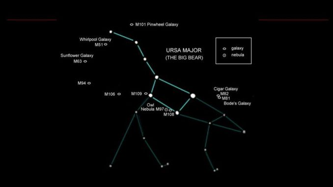
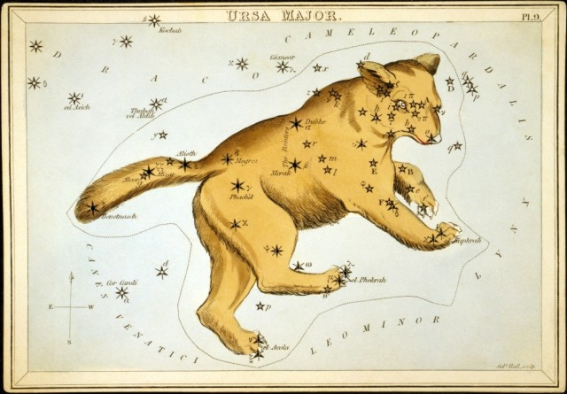

The Big Dipper/Ursa Major,'The Great Bear'
Ursa Major constellation lies in the northern sky. Its name means “the great bear,” or “the larger bear,” in Latin. The smaller bear is represented by Ursa Minor. Ursa Major is the largest northern constellation and third largest constellation in the sky. Its brightest stars form the Big Dipper asterism, one of the most recognizable shapes in the sky, also known as the Plough. Ursa Major is well-known in most world cultures and associated with a number of myths. It was one of the constellations catalogued by the Greek astronomer Ptolemy in the 2nd century. In Greek mythology, it is associated with Callisto, a nymph who was turned into a bear by Zeus’ jealous wife Hera. Ursa Major contains a number of notable stars and famous deep sky objects; among them, the Pinwheel Galaxy (M101), Bode’s Galaxy, the Cigar Galaxy, and the Owl Nebula.

MYTHOLOGY
Ursa Major is a well-known, significant constellation in many cultures. It is one of the oldest constellations in the sky, with a history dating back to ancient times. The constellation is referenced in Homer and the Bible. A great number of tales and legends across the globe associate Ursa Major with a bear. Ancient Greeks associated the constellation with the myth of Callisto, the beautiful nymph who had sworn a vow of chastity to the goddess Artemis. Zeus saw the nymph one day and fell in love. The two had a son, and named him Arcas. Artemis had already banished Callisto when she had learned about the nymph’s pregnancy and broken vow. However, it was Zeus’ jealous wife Hera, who was not amused by her husband’s philandering, who would do even more damage. Angered by Zeus’ betrayal, she turned Callisto into a bear. Callisto lived as a bear for the next 15 years, roaming the forest and always running and hiding from hunters. One day, her son Arcas was walking in the forest and the two came face to face. At the sight of the bear, Arcas quickly drew his spear, scared. Seeing the scene from Olympus, Zeus intervened to prevent disaster. He sent a whirlwind that carried both Callisto and Arcas into the heavens, where he turned Arcas into the constellation Boötes, the Herdsman, and Callisto into Ursa Major. (In another version, Arcas becomes the constellation Ursa Minor.) This only further infuriated Hera and she persuaded her foster parents Oceanus and Tethys never to let the bear bathe in the northern waters. This, according to the legend, is why Ursa Major never sets below the horizon in mid-northern latitudes.

In a different version of the tale, it is not Hera but Artemis who transforms Callisto into a bear. Artemis does this to punish the nymph for breaking her vow of chastity to the goddess. Many years later, both Callisto and Arcas get captured in the forest and taken to King Lycaon as a gift. The mother and son take refuge in the temple of Zeus, where trespassing is punishable by death, but the god intervenes and saves them, placing them both in the sky. There is an entirely different Greek myth associated with Ursa Major, the one about Adrasteia. Adrasteia was one of the nymphs who took care of Zeus when he was very young. Zeus’ father Cronus was told by an oracle that one of his children would eventually overthrow him and, fearful of the prophecy, Cronus swallowed all his children until Zeus was born. Rhea, Zeus’ mother, smuggled their youngest child to the island of Crete, where the nymphs Adrasteia and Ida nursed young Zeus for a year. In this version of the myth, Ida is associated with the constellation Ursa Minor. Amaltheia, the goat that nursed Zeus, was placed in the sky as the bright star Capella in the constellation Auriga. The prophecy eventually came true; Zeus overthrew Cronus and freed his brothers Hades and Poseidon and sisters Demeter, Hera and Hestia.
The Romans called the constellation Septentrio, or “seven plough oxen,” even though only two of the seven stars represented oxen, while the others formed a wagon. Ursa Major is associated with many different forms in the sky in different cultures, from the camel, shark and skunk to the sickle, bushel and canoe. The Chinese know the seven brightest stars, or Tseih Sing, as the Government, or Pih Tow, the Northern Measure. In Hindu legend, the brightest stars of Ursa Major represent the Seven Sages and the constellation is known as Saptarshi. The sages in question are Bhrigu, Atri, Angirasa, Vasishta, Pulastya, Pulalaha and Kratu. In some Native American tales, the bowl of the Big Dipper represents a large bear and the stars that mark the handle are the warriors chasing it. Since the constellation is pretty low in the sky in autumn, the legend says that it is the blood of the wounded bear that causes the leaves to turn red. In more recent American history, the Big Dipper played a role in the Underground Railroad, as its position in the sky helped slaves find their way north. There were numerous songs that spread among slaves in the south that said to follow the ‘Drinking Gourd’ to get to a better life.
FACTS
Orion is the 26th constellation in size, occupying an area of 594 square degrees. It is located in the first quadrant of the northern hemisphere (NQ1) and can be seen at latitudes between +85° and -75°. The neighboring constellations are Eridanus, Gemini, Lepus, Monoceros and Taurus. Orion belongs to the Orion family of constellations, along with Canis Major, Canis Minor, Lepus and Monoceros. The constellation contains three Messier objects – Messier 42 (M42, NGC 1976, Orion Nebula), Messier 43 (M43, NGC 1982, De Mairan’s Nebula), and Messier 78 (M78, NGC 2068) – and has seven stars with known planets. The brightest star in the constellation is Rigel, Beta Orionis, with an apparent magnitude of 0.18. Rigel is also the sixth brightest star in the sky. The second brightest star in Orion, Betelgeuse, Alpha Orionis, has an apparent magnitude of 0.43 and is the eighth brightest star in the night sky. There are two meteor showers associated with Orion, the Orionids and the Chi Orionids. The Orionid meteor shower. reaches its peak around October 21 every year.